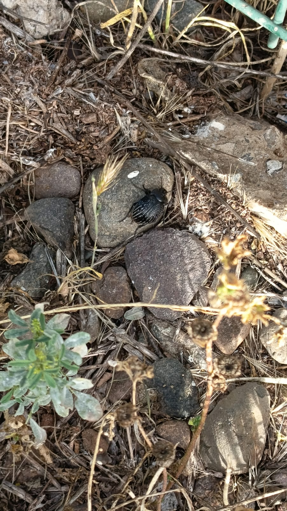

Ficha de especie
Vaquita del desierto
Foto del insecto

Ver másVer menos
- Tamaño
- Mide aproximadamente 18 mm de largo (1,8 cm). [1]
Qué hace en el ambiente
Ayuda al ecosistema del desierto al participar en el ciclo de la materia y los nutrientes, alimentándose de materia vegetal. [6]
Qué come
Es herbívora, por lo que se alimenta principalmente de materia vegetal disponible en su hábitat. [1]
Ciclo de vida
Como escarabajo, pasa por huevo → larva → pupa → adulto. [4]
Dato curioso
Sus élitros (alas delanteras endurecidas) tienen seis franjas blancas. Además, no posee alas posteriores funcionales para volar. [1]
Amenazas
Sus principales amenazas son la pérdida y transformación de su hábitat, el pastoreo de cabras, la extracción de leña y el aumento de los incendios. [1]